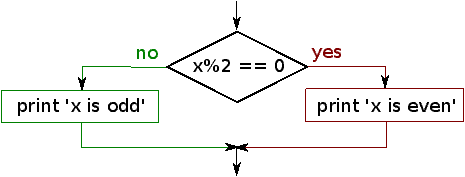

Chapter 3 Conditional execution
3.1 Boolean expressions
A boolean expression is an expression that is either true
or false. The following examples use the
operator ==, which compares two operands and produces
True if they are equal and False otherwise:
>>> 5 == 5
True
>>> 5 == 6
False
True and False are special
values that belong to the type bool; they are not strings:
>>> type(True)
<type 'bool'>
>>> type(False)
<type 'bool'>
The == operator is one of the comparison operators; the
others are:
x != y # x is not equal to y
x > y # x is greater than y
x < y # x is less than y
x >= y # x is greater than or equal to y
x <= y # x is less than or equal to y
x is y # x is the same as y
x is not y # x is not the same as y
Although these operations are probably familiar to you, the Python
symbols are different from the mathematical symbols. A common error
is to use a single equal sign (=) instead of a double equal sign
(==). Remember that = is an assignment operator and
== is a comparison operator. There is no such thing as
=< or =>.
3.2 Logical operators
There are three logical operators: and, or, and not. The semantics (meaning) of these operators is
similar to their meaning in English. For example,
x > 0 and x < 10
is true only if x is greater than 0
and less than 10.
n%2 == 0 or n%3 == 0 is true if either of the conditions
is true, that is, if the number is divisible by 2 or 3.
Finally, the not operator negates a boolean
expression, so not (x > y) is true if x > y is false,
that is, if x is less than or equal to y.
Strictly speaking, the operands of the logical operators should be
boolean expressions, but Python is not very strict.
Any nonzero number is interpreted as "true."
>>> 17 and True
True
This flexibility can be useful, but there are some subtleties to
it that might be confusing. You might want to avoid it (unless
you know what you are doing).
3.3 Conditional execution
In order to write useful programs, we almost always need the ability
to check conditions and change the behavior of the program
accordingly. Conditional statements give us this ability. The
simplest form is the if statement:
if x > 0 :
print 'x is positive'
The boolean expression after the if statement is
called the condition. We end the if
statement with a colon character (:) and the line(s)
after the if statement are indented.
If the logical condition is true, then the indented
statement gets executed. If the logical condition is
false, the indented statement is skipped.
if statements have the same structure as function definitions
or for loops. The statement consists of a header line
that ends with the colon character (:)
followed by an indented block. Statements like this are
called compound statements because they stretch
across more than one line.
There is no limit on the number of statements that can appear in
the body, but there has to be at least one.
Occasionally, it is useful to have a body with no statements (usually
as a place keeper for code you haven't written yet). In that
case, you can use the pass statement, which does nothing.
if x < 0 :
pass # need to handle negative values!
If you enter an if statement in the Python interpreter, the prompt will change
from three chevrons to three dots to indicate you are in the middle of a block of
statements as shown below:
>>> x = 3
>>> if x < 10:
... print 'Small'
...
Small
>>>
3.4 Alternative execution
A second form of the if statement is alternative execution,
in which there are two possibilities and the condition determines
which one gets executed. The syntax looks like this:
if x%2 == 0 :
print 'x is even'
else :
print 'x is odd'
If the remainder when x is divided by 2 is 0, then we
know that x is even, and the program displays a message to that
effect. If the condition is false, the second set of statements is
executed.

Since the condition must be true or false, exactly one of
the alternatives will be executed. The alternatives are called
branches, because they are branches in the flow of execution.
3.5 Chained conditionals
Sometimes there are more than two possibilities and we need more than
two branches. One way to express a computation like that is a chained conditional:
if x < y:
print 'x is less than y'
elif x > y:
print 'x is greater than y'
else:
print 'x and y are equal'
elif is an abbreviation of "else if." Again, exactly one
branch will be executed.
There is no limit on the number of elif statements. If there is an else clause, it has to be
at the end, but there doesn't have to be one.
if choice == 'a':
print 'Bad guess'
elif choice == 'b':
print 'Good guess'
elif choice == 'c':
print 'Close, but not correct'
Each condition is checked in order. If the first is false,
the next is checked, and so on. If one of them is
true, the corresponding branch executes, and the statement
ends. Even if more than one condition is true, only the
first true branch executes.
3.6 Nested conditionals
One conditional can also be nested within another. We could have
written the trichotomy example like this:
if x == y:
print 'x and y are equal'
else:
if x < y:
print 'x is less than y'
else:
print 'x is greater than y'
The outer conditional contains two branches. The
first branch contains a simple statement. The second branch
contains another if statement, which has two branches of its
own. Those two branches are both simple statements,
although they could have been conditional statements as well.
Although the indentation of the statements makes the structure
apparent, nested conditionals become difficult to read very
quickly. In general, it is a good idea to avoid them when you can.
Logical operators often provide a way to simplify nested conditional
statements. For example, we can rewrite the following code using a
single conditional:
if 0 < x:
if x < 10:
print 'x is a positive single-digit number.'
The print statement is executed only if we make it past both
conditionals, so we can get the same effect with the and operator:
if 0 < x and x < 10:
print 'x is a positive single-digit number.'
3.7 Catching exceptions using try and except
Earlier we saw a code segment where we used the raw_input and
int functions to read and parse an integer number entered by
the user. We also saw how treacherous doing this could be:
>>> speed = raw_input(prompt)
What...is the airspeed velocity of an unladen swallow?
What do you mean, an African or a European swallow?
>>> int(speed)
ValueError: invalid literal for int()
>>>
When we are executing these statements in the Python interpreter,
we get a new prompt from the interpreter, think "oops" and move
on to our next statement.
However if this code is placed in a
Python script and this error occurs, your script immediately
stops in its tracks with a traceback.
It does not execute the following statement.
Here is a sample program to convert a Fahrenheit temperature
to a Celsius temperature:
inp = raw_input('Enter Fahrenheit Temperature:')
fahr = float(inp)
cel = (fahr - 32.0) * 5.0 / 9.0
print cel
If we execute this code and give it invalid input, it simply fails
with an unfriendly error message:
python fahren.py
Enter Fahrenheit Temperature:72
22.2222222222
python fahren.py
Enter Fahrenheit Temperature:fred
Traceback (most recent call last):
File "fahren.py", line 2, in <module>
fahr = float(inp)
ValueError: invalid literal for float(): fred
There is a conditional execution structure built into
Python to handle these types of expected and unexpected
errors called "try / except". The idea of try
and except is that you know that some sequence
of instruction(s) may have a problem and you want to
add some statements to be executed if an error occurs.
These extra statements (the except block) are ignored
if there is no error.
You can think of the try and except feature
in Python as an "insurance policy" on a sequence of
statements.
We can rewrite our temperature converter as follows:
inp = raw_input('Enter Fahrenheit Temperature:')
try:
fahr = float(inp)
cel = (fahr - 32.0) * 5.0 / 9.0
print cel
except:
print 'Please enter a number'
Python starts by executing the
sequence of statements in the
try block. If all goes
well, it skips the except block and proceeds. If an
exception occurs in the try block,
Python jumps out of the try block and
executes the sequence of statements in the except block.
python fahren2.py
Enter Fahrenheit Temperature:72
22.2222222222
python fahren2.py
Enter Fahrenheit Temperature:fred
Please enter a number
Handling an exception with a try statement is called catching an exception. In this example, the except clause
prints an error message. In general,
catching an exception gives you a chance to fix the problem, or try
again, or at least end the program gracefully.
3.8 Short circuit evaluation of logical expressions
When Python is processing a logical expression such as
x >= 2 and (x/y) > 2, it evaluates the expression
from left-to-right. Because of the definition of and,
if x is less than 2, the expression x >= 2 is
False and so the whole expression is False regardless
of whether (x/y) > 2 evaluates to True or False.
When Python detects that there is nothing to be gained by evaluating
the rest of a logical expression, it stops its evaluation and does
not do the computations in the rest of the logical expression.
When the evaluation of a logical expression stops because the overall
value is already known, it is called short-circuiting
the evaluation.
While this may seem like a fine point, the short circuit behavior
leads to a clever technique called the guardian pattern.
Consider the following code sequence in the Python interpreter:
>>> x = 6
>>> y = 2
>>> x >= 2 and (x/y) > 2
True
>>> x = 1
>>> y = 0
>>> x >= 2 and (x/y) > 2
False
>>> x = 6
>>> y = 0
>>> x >= 2 and (x/y) > 2
Traceback (most recent call last):
File "<stdin>", line 1, in <module>
ZeroDivisionError: integer division or modulo by zero
>>>
The third calculation failed because Python was evaluating (x/y)
and y was zero which causes a runtime error. But the second example
did not fail because the first part of the expression x >= 2
evaluated to False so the (x/y) was not ever executed
due to the short circuit rule and there was no error.
We can construct the logical expression to strategically place a guard
evaluation just before the evaluation that might cause an error as follows:
>>> x = 1
>>> y = 0
>>> x >= 2 and y != 0 and (x/y) > 2
False
>>> x = 6
>>> y = 0
>>> x >= 2 and y != 0 and (x/y) > 2
False
>>> x >= 2 and (x/y) > 2 and y != 0
Traceback (most recent call last):
File "<stdin>", line 1, in <module>
ZeroDivisionError: integer division or modulo by zero
>>>
In the first logical expression, x >= 2 is False so the evaluation
stops at the and. In the second logical expression x >= 2 is True
but y != 0 is False so we never reach (x/y).
In the third logical expression, the y != 0 is after the
(x/y) calculation so the expression fails with an error.
In the second expression, we say that y != 0 acts as a guard
to insure that we only execute (x/y) if y is non-zero.
3.9 Debugging
The traceback Python displays when an error occurs contains
a lot of information, but it can be overwhelming, especially
when there are many frames on the stack. The most
useful parts are usually:
- What kind of error it was, and
- Where it occurred.
Syntax errors are usually easy to find, but there are a few
gotchas. Whitespace errors can be tricky because spaces and
tabs are invisible and we are used to ignoring them.
>>> x = 5
>>> y = 6
File "<stdin>", line 1
y = 6
^
SyntaxError: invalid syntax
In this example, the problem is that the second line is indented by
one space. But the error message points to y, which is
misleading. In general, error messages indicate where the problem was
discovered, but the actual error might be earlier in the code,
sometimes on a previous line.
The same is true of runtime errors. Suppose you are trying
to compute a signal-to-noise ratio in decibels. The formula
is SNRdb = 10 log10 (Psignal / Pnoise). In Python,
you might write something like this:
import math
signal_power = 9
noise_power = 10
ratio = signal_power / noise_power
decibels = 10 * math.log10(ratio)
print decibels
But when you run it, you get an error message1:
Traceback (most recent call last):
File "snr.py", line 5, in ?
decibels = 10 * math.log10(ratio)
OverflowError: math range error
The error message indicates line 5, but there is nothing
wrong with that line. To find the real error, it might be
useful to print the value of ratio, which turns out to
be 0. The problem is in line 4, because dividing two integers
does floor division. The solution is to represent signal power
and noise power with floating-point values.
In general, error messages tell you where the problem was discovered,
but that is often not where it was caused.
3.10 Glossary
- body:
- The sequence of statements within a compound statement.
- boolean expression:
- An expression whose value is either
True or False.
- branch:
- One of the alternative sequences of statements in
a conditional statement.
- chained conditional:
- A conditional statement with a series
of alternative branches.
- comparison operator:
- One of the operators that compares
its operands: ==, !=, >, <, >=, and <=.
- conditional statement:
- A statement that controls the flow of
execution depending on some condition.
- condition:
- The boolean expression in a conditional statement
that determines which branch is executed.
- compound statement:
- A statement that consists of a header
and a body. The header ends with a colon (:). The body is indented
relative to the header.
- guardian pattern:
- Where we construct a logical expression
with additional
comparisons to take advantage of the short circuit behavior.
- logical operator:
- One of the operators that combines boolean
expressions: and, or, and not.
- nested conditional:
- A conditional statement that appears
in one of the branches of another conditional statement.
- traceback:
- A list of the functions that are executing,
printed when an exception occurs.
- short circuit:
- When Python is part-way through evaluating a
logical expression and stops the evaluation because Python
knows the final value for the expression
without needing to evaluate the rest of the expression.
3.11 Exercises
Exercise 1
Rewrite your pay computation to give the employee 1.5
times the hourly rate for
hours worked above 40 hours.
Enter Hours: 45
Enter Rate: 10
Pay: 475.0
Exercise 2
Rewrite your pay program using try and except
so that your program handles non-numeric input gracefully
by printing a message and exiting the program.
The following shows two executions of the program:
Enter Hours: 20
Enter Rate: nine
Error, please enter numeric input
Enter Hours: forty
Error, please enter numeric input
Exercise 3
Write a program to prompt for a score between 0.0 and 1.0.
If the score is out of range print an error. If the score
is between 0.0 and 1.0, print a grade using the following
table:
Score Grade
>= 0.9 A
>= 0.8 B
>= 0.7 C
>= 0.6 D
< 0.6 F
Enter score: 0.95
A
Enter score: perfect
Bad score
Enter score: 10.0
Bad score
Enter score: 0.75
C
Enter score: 0.5
F
Run the program repeatedly as shown above to test the
various different values for input.
- 1
- In Python 3.0,
you no longer get an error message; the division operator performs
floating-point division even with integer operands.